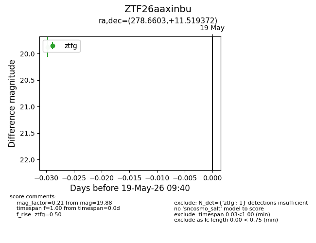
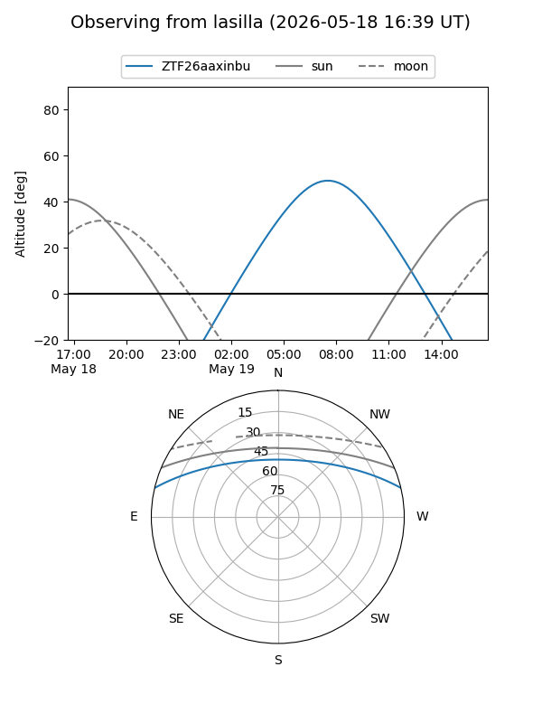
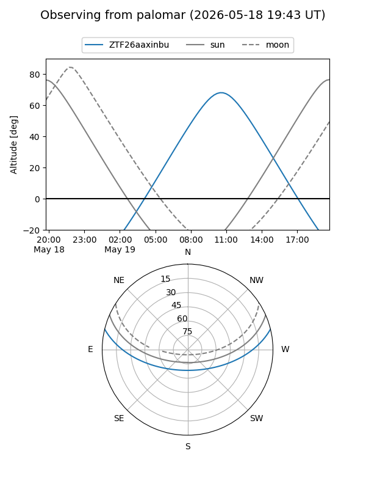

ZTF26aaxinbu
Target ZTF26aaxinbu at 2026-05-19 09:41
Aliases and brokers:
FINK: link
Lasair: link
ALeRCE: link
alt names
ZTF26aaxinbu (ztf,fink_ztf)
Coordinates:
equatorial (ra, dec) = 278.6603,+11.51937
equatorial (HMS+DMS) = 18:34:38.47,+11:31:09.74
galactic (l, b) = (41.3726,+8.91190)
Flags:
Photometry:
last ztfg=19.88
1 ztfg detections
Lightcurve

Visibility


Additional plots